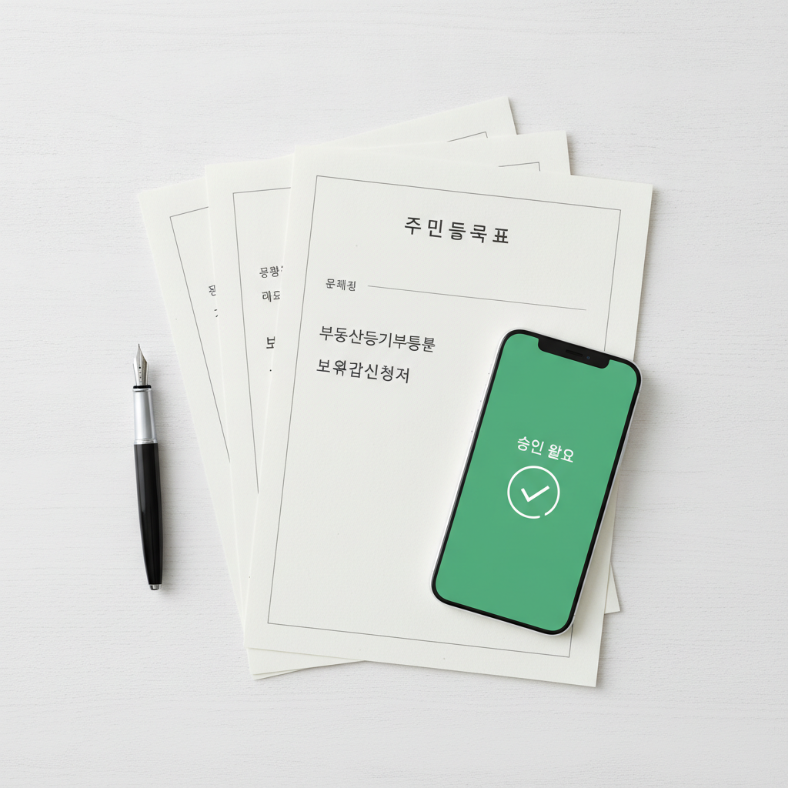

전세보증보험 HUG vs HF vs SGI 가입 조건 비교 — 기관별 보증료율 계산표와 신청 서류 체크리스트
전세 계약 만기 시 집주인이 보증금을 제때 돌려주지 못하거나 집이 경매로 넘어가는 '깡통전세' 위험을 막기 위한 가장 확실한 안전장치는 바로 전세보증금반환보증(전세보증보험)입니다. 국내에서는 HUG(주택도시보증공사), HF(한국주택금융공사), SGI(서울보증) 3개 기관에서 보증보험을 취급하고 있으나, 기관마다 보증 한도, 보증료율, 가입 요건, 단독 가입 가능 여부가 크게 다릅니다. 본 글에서는 3대 기관의 핵심 가입 조건과 보증금별 실제 보증료 계산표를 1차 공적 출처를 바탕으로 정밀 비교하고, 거절 없는 신청을 위한 필수 서류 체크리스트를 전해드립니다.
전세대출 및 전세보증보험 가입 요건과 보증료율을 비교 검토하는 모습 / AI 제작 이미지
01 | 전세사기·깡통전세 공포, 왜 전세보증보험 가입이 필수인가
주택 시장의 가격 변동성이 커지고 역전세난이 지속되면서 세입자의 가장 큰 자산인 전세보증금을 온전히 지키는 일이 주거 안정의 최우선 과제가 되었습니다.
전세권 설정 등기는 수십만 원의 설정 비용이 들 뿐 아니라 집주인의 인감증명서 등 동의가 필수적이고, 실제 사고 시 직접 경매를 신청해야 하는 등 회수 절차가 1년 이상 걸리는 한계가 있습니다.
반면 전세보증금반환보증에 가입해 두면, 계약 만료 후 1개월간 보증금을 돌려받지 못하거나 주택이 경매로 넘어갔을 때 보증기관이 집주인을 대신해 전세보증금 전액을 세입자에게 즉시 대위변제(선지급)해 주므로 원금 손실 위험을 100% 원천 차단할 수 있습니다.
02 | 국내 전세보증보험 3대 취급 기관(HUG·HF·SGI)의 역할과 성격
대한민국에서 전세보증금반환보증을 취급하는 공인 기관은 3곳으로 각각 뚜렷한 법적 성격과 특성을 지닙니다.
1. HUG (주택도시보증공사): 국토교통부 산하 공기업으로 가장 많은 세입자가 이용하는 표준 보증기관입니다. 전세대출 유무와 상관없이 보증보험만 '단독 가입'할 수 있는 대표적인 창구입니다.
2. HF (한국주택금융공사): 금융위원회 산하 공기업으로 3개 기관 중 보증료율이 가장 저렴합니다. 단, 원칙적으로 한국주택금융공사의 전세대출(보증서 담보 대출)을 이용하는 차주에 한해 패키지로 가입할 수 있습니다.
3. SGI (서울보증 / SGI서울보증보험): 민간 보증보험 회사로 공기업 대비 가입 문턱이 유연하며, 특히 아파트의 경우 보증금 한도 제한이 없어 고가 전세 주택 세입자에게 필수적인 선택지입니다.
03 | HUG 주택도시보증공사 — 아파트·빌라 표준, 단독 가입의 대표주자
HUG의 가장 큰 장점은 전세대출을 받지 않은 순수 자기 자본 세입자나 다른 기관 대출을 이용 중인 세입자도 네이버페이, 카카오페이, 토스, 안심전세 앱 등 모바일 플랫폼을 통해 비대면으로 손쉽게 '단독 보증'에 가입할 수 있다는 점입니다.
보증 한도는 수도권 7억 원 이하, 지방 5억 원 이하 주택까지 적용됩니다.
다만 2024년 이후 전세사기 방지를 위해 도입된 이른바 '공시가격의 126% 룰(공시가격 인정비율 140% × 전세가율 90%)'이 엄격히 적용되므로, 다세대·빌라의 경우 전세보증금이 공시가격의 126%를 1원이라도 초과하면 가입이 거절된다는 점을 계약 전 반드시 계산해 보아야 합니다.

전세보증보험 신청을 위해 준비한 공인 임대차계약서와 등기부등본 서류 / AI 제작 이미지
04 | HF 한국주택금융공사 — 가장 저렴한 보증료, 전세대출 연계 조건
HF 한국주택금융공사의 최대 무기는 압도적인 가성비입니다.
HF의 기본 보증료율은 아파트 기준 연 0.02%~0.04% 수준에 불과하여, 연 0.12% 수준인 HUG 대비 약 1/3~1/5 수준으로 매우 저렴합니다. 2년 계약 동안 지출되는 보증료가 불과 10만~20만 원 안팎에 불과합니다.
단점은 HF 보증서를 담보로 전세대출을 실행할 때 은행 창구에서만 함께 신청이 가능하다는 점입니다. 무대출 세입자이거나 타 기관 대출 세입자는 원칙적으로 가입할 수 없으므로, 전세대출을 처음 알아보는 단계라면 반드시 은행원에게 "HF 보증서 담보 대출과 반환보증을 함께 묶어달라"고 요청해야 합니다.
05 | SGI 서울보증 — 고가 전세 아파트 무제한 보증 한도의 강점
서울 강남, 서초, 송파 등 전세 시세가 10억 원을 훌쩍 넘는 고가 아파트의 경우 공기업인 HUG(수도권 7억 한도)와 HF(수도권 7억 한도)에서는 가입 자체가 불가능합니다.
이때 유일한 대안이 바로 SGI 서울보증입니다. SGI는 아파트에 한하여 보증금 상한선이 무제한이며, 연립·다세대·단독주택도 최대 10억 원까지 보증해 줍니다.
대신 민간 보증사 특성상 기본 보증료율이 연 0.183%(아파트 기준)로 3개 기관 중 가장 높게 책정되어 있습니다.
06 | 기관별 가입 대상 주택·보증 한도·부채비율(공시가 126% 룰) 비교표
세입자가 본인의 주택 유형과 대출 상황에 맞는 최적의 보증기관을 한눈에 판단할 수 있도록 핵심 지표를 비교하였습니다.
| 비교 항목 |
HUG (주택도시보증공사) |
HF (한국주택금융공사) |
SGI (서울보증) |
| 단독 가입 가능 여부 |
가능 (대출 무관 단독 가입) |
원칙적 불가 (HF 전세대출 연계) |
가능 (단독 가입 가능) |
| 보증금 상한선 |
수도권 7억 / 지방 5억 원 |
수도권 7억 / 지방 5억 원 |
아파트 제한 없음 / 기타 10억 원 |
| 기본 보증료율 (아파트) |
연 0.115% ~ 0.128% |
연 0.02% ~ 0.04% (최저) |
연 0.183% |
| 부채비율 기준 |
선순위채권+보증금 ≤ 주택가격 90% |
선순위채권+보증금 ≤ 주택가격 100% |
선순위채권+보증금 ≤ 주택가격 100% |
| 신청 가능 기간 |
계약 기간의 1/2 경과 전 |
계약 기간의 1/2 경과 전 |
계약 시작일로부터 10개월 이내 |
07 | 전세보증금 규모별(2억·3억·5억) 실제 보증료 산출 계산표
아파트 2년 임대차 계약 기준, 각 기관별 실제 청구되는 2년간 총 보증료 시뮬레이션입니다. (사회배려계층 할인 미적용 기본 요율 기준)
| 전세보증금 |
HUG (2년 총 납입액) |
HF (2년 총 납입액 - 최저) |
SGI (2년 총 납입액) |
| 2억 원 (지방/소형) |
약 46만 ~ 51만 원 |
약 12만 ~ 16만 원 |
약 73만 원 |
| 3억 원 (수도권 중소형) |
약 69만 ~ 76만 원 |
약 18만 ~ 24만 원 |
약 110만 원 |
| 5억 원 (수도권 중형) |
약 115만 ~ 128만 원 |
약 30만 ~ 40만 원 |
약 183만 원 |
HF를 이용할 수 있는 전세대출자라면 2년간 단 30만 원대로 5억 원의 보증금을 완벽히 지킬 수 있어 가장 유리하며, 단독 가입자라면 HUG의 비대면 모바일 채널을 이용하는 것이 가성비와 편의성 면에서 최선입니다.
08 | 보증료 10%~60% 할인받는 사회배려계층 및 전자계약 감면 조건
보증료가 부담스럽다면 각 기관이 제공하는 법정 감면 혜택을 반드시 챙겨야 합니다.
· 신혼부부 및 청년 할인: 혼인기간 7년 이내(또는 3개월 이내 결혼 예정) 신혼부부 및 만 19세~34세 청년 가구는 HUG에서 40%~50% 보증료 할인이 적용됩니다.
· 저소득·다자녀·장애인·한부모 가구: 연소득 4천만 원 이하 저소득층이나 미성년 자녀 3인 이상 다자녀 가구 등은 최대 50%~60%까지 파격적인 할인을 받을 수 있습니다.
· 부동산 전자계약 할인: 국토교통부 부동산거래 전자계약시스템을 통해 임대차 계약서를 전자서명으로 작성한 경우 기본 보증료의 3%~10%를 추가 할인해 줍니다.
· 지자체 청년 전세보증금 보증료 지원사업: 서울시 및 주요 지자체에서는 만 19~39세 무주택 청년(연소득 5천만 원 이하)을 대상으로 납부한 전세보증보험료를 최대 30만 원까지 현금 환급해 주는 제도를 운영 중이므로 정부24에서 반드시 신청하세요.
09 | 가입 신청 가능 기한(임대차 계약 기간 1/2 경과 전)과 주의사항
보증보험은 이사 직후에만 가입할 수 있는 것이 아니라 전체 계약 기간의 1/2이 지나기 전까지 신청할 수 있습니다. 2년(24개월) 계약이라면 전입신고일(또는 잔금 지급일)로부터 12개월이 지나기 전에 신청해야 합니다.
하지만 가입을 미루다가 그사이에 집주인이 집을 담보로 근저당권을 추가 설정하거나 세금 체납으로 압류가 걸리면 그 즉시 보증 가입이 영구 거절됩니다. 따라서 잔금을 치르고 전입신고와 확정일자를 마친 당일 또는 늦어도 1주일 이내에 신속히 신청하는 것이 가장 안전합니다.
10 | 은행 창구 및 모바일 앱 가입 전 필수 제출 서류 8종 체크리스트
서류 미비로 심사가 지연되거나 반려되지 않도록 사전에 발급받아야 할 필수 서류 목록입니다.
📋 전세보증보험 신청 필수 서류 8종 체크리스트
1. 확정일자부 임대차계약서 사본: 공인중개사 날인 및 주민센터 또는 대법원 인터넷등기소 확정일자 도장이 선명해야 합니다.
2. 보증금 완납 영수증: 계약금 및 잔금 전액을 임대인 계좌로 이체한 은행 무통장입금증 또는 공인중개사 발행 영수증.
3. 주민등록등본: 주민번호 뒷자리 포함, 최근 1개월 이내 발급분 (전입신고 완료 확인용).
4. 주민등록초본: 과거 주소 변동 이력 전체 포함 발급분.
5. 부동산 등기부등본 (등기사항전부증명서): 신청일 기준 1주일 이내 발급된 말소사항 포함 원본.
6. 건축물대장: 위반건축물 표기 여부 확인용 (위반건축물 적발 주택은 전 기관 가입 불가).
7. 전입세대확인서 (도로명 및 지번 각 1부): 주민센터 방문 발급 필수, 본인 외 타 세대 전입 여부 확인.
8. 신분증 사본: 신청인 주민등록증 또는 운전면허증 사본.
#전세보증보험비교
#HUG전세보증보험
#HF전세자금보증
#SGI서울보증
#전세보증보험가입조건
#전세보증료계산
#공시가격126퍼센트
#깡통전세예방
#전세사기대응
#임대차서류체크리스트